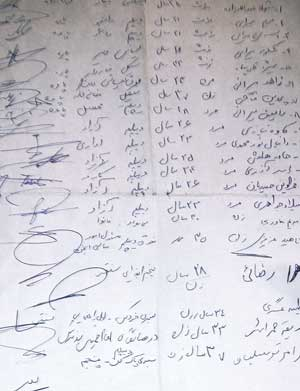

|
|

کمپین در نانوایی، گزارشی از زنان خودسرپرست سنقر/زینب پیغمبرزاده
يكشنبه18 شهریور 1386
از میان بازاری پر از لباس های رنگارنگ کردی و همهه زنان و مردان کرد و ترک می گذریم. بوی نان تازه از انتهای کوچه بن بست در این ظهر تابستان بی اختیار ما را به زیر آن طاقی تاریک می کشاند . پشت این در باز و این پرده رنگ و رو رفته زنانی را می یابیم که تمام روز را برای سیر کردن شکم بچه هایی تلاش می کنند که هیچ حقی بر آن ها ندارند.
اینجا انجمن بانوان نیکوکار کوثر در شهرستان سنقر است . شهری محصور در میان کوههایی زیبا ، با ترکیب قومیتی دوپاره کرد و ترک . سعی می کنم وارد یکی از دو دالانی می شوم که در آن زنانی نسبتاً جوان نان های محلی می پزند ، اما هرم گرما مرا به عقب می راند . حتی نمی توانم تصور کنم که چگونه سال هاست هر روز از صبح تا شب کنار این تنورهای داغ می ایستند . معصومه زن جوانی که چهار سال است اینجا کار می کند می گوید :" تازه الان هوا بهتر شده بعضی وقت ها این قدر هوا گرم می شود که باید روزی دوبار لباسهای خیس از عرق مان را عوض کنیم ."
هر طوری هست کنار تنورهایشان میایستیم و با زنانی که خمیر می گیرند از قوانین تبعیض آمیز می گوییم . آنها درد آشنا تر از آنند که لازم باشد ، برایشان رنج زنان را تصویر کنی. خودشان از بچه هایی می گویند که سالهاست از آنها گرفته شده اند .از تلاش بی حاصلشان برای ترک دادن شوهران معتاد و از جوانی هایی که در راهروهای دادگاههای خانواده در جستجوی سراب طلاق به تاراج رفته اند . زهرا زنی بیست و هفت ساله ای که با مادر پیرش زندگی می کند ، از دور باطلی می گوید که در آن گرفتار شده است :" فقط یه سال با شوهر اولم زندگی کردم که فهمیدم معتاده . همه چیزم رو بخشیدم و ازش جدا شدم . تازگی ها فهمیدم که شوهر دومم هم معتاده و تازه غیر من یه زن دیگه داره که هیچی ، بچه هم داره . می خوام از اون هم جدا بشم ."
معصومه از بهزیستی و کمیته امدادی می گوید که از آنها حمایت نمی کنند .آنها معتقدند معصومه خود سرپرست نیست ، چون شوهر دارد . اما شوهر معتاد او اگر هم بتواند چند ماهی سر کار بماند و اخراجش نکنند ، هر چه که در بیاورد خرج مواد می کند . معصومه می ماند و مخارج بچه هایی که دیگر کم کم دارند بزرگ می شوند ، اجاره خانه و قسط های وام ها و قرض هایی که مدام بیشتر و بیشتر می شوند.
سارا برایشان از مسئولیت مادر بودن می گوید . از اینکه که وظیفه مادری فقط تر و خشک کردن بچه ها نیست . اینکه اگر برای تغییر قوانین تلاش کنیم دیگر دخترهایمان مشکلات ما را نخواهند داشت . حرف های سارا امید را در دل های ناامید آنها بیدار می کند . یکی یکی اسم هایشان را می گویند تا سارا برای اولین بار در فرم های کمپین بنویسد ، شغل : نانوا .

همه اما به این راحتی ها راضی نمی شوند . طیبه زن میانسالی که پشت پیشخان نشسته کبودی روی صورتش را نشان می دهد .حتی اینکه از شوهرش کتکش می خورد ، او را وا نمی دارد تا زیر برگه ای را امضا کند که به این نابرابری ها نه می گوید . طیبه خسته تر از آن است که به آینده فکر کند . زندگی دیگر برایش تمام شده . انگار با همین چهل و چند سال سنش مدت هاست منتظر است مرگش فرا رسد . به زن جوانی که به تازگی از شوهرش طلاق گرفته ، اعتراض می کند که چرا خیال ازدواج دوباره دارد. اما حتی او هم می تواند جهان دیگری را برای زنان متصور شود. منتها نه برای خودش، برای دخترش . طیبه می گوید قبل از اینکه درس دخترش تمام شود و سرکار برود محال است او را شوهر دهد . حق دارد نباید اجازه دهد کوکی دخترش در میان صدای گریه بچه ها و سرود ظرف های مسین در سیاهکاری مطبخ گم شود.
به زهرا که نگاه می کنم باورم نمی شود که فقط پبیست و هفت سال دارد . وا می رود :"یعنی خیلی پیرتر از اینا به چشم می یام ؟" او یازده سالگی ازدواج کرده و حالا یک سالی است که از شوهرش جدا شده . همه همکارانش به او قبطه می خوردند که هم توانسته بچه هایش را پیش خودش نگه دارد و هم خانه اش را .سه دانگ خانه به اسم اوست و سه دانگ دیگر به اسم شوهرش . او به خانه نیاز دارد برای اینکه بچه هایش را دست تنها با حقوق روزی هزار و پانصد تومان بزرگ کند .
نانوایی پر از صدای زنها می شود . زنان نانوایی که به کردی یا ترکی مشتریانشان را تشویق به امضا می کنند و صدای زنانی که به دنبال گوش شنوایی می گردند ، تا از دردهایی بگویند که فراتر از مرزهای قومی و زبانی زندگی هایشان را به کابوسی پایان ناپذیر بدل کرده.عطر شوید و نعنای خشک کرده حیاط را پر کرده و ما کنار شیشه های بزرگ آبلیمو و آبغوره ،زیر سایه داربست های انگور فقط گوش می کنیم به این همه درد و این همه شوق.